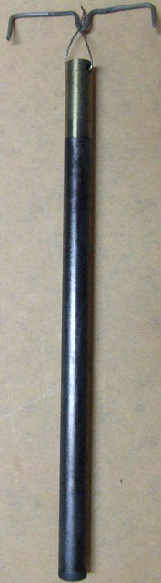
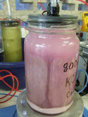
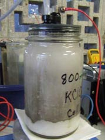
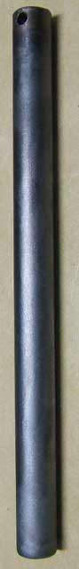
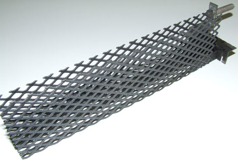
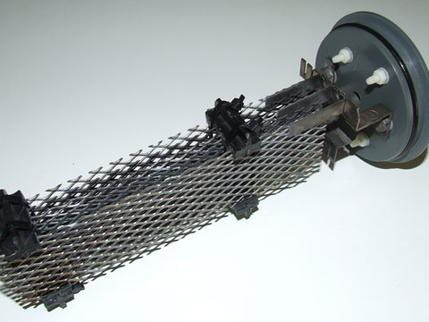
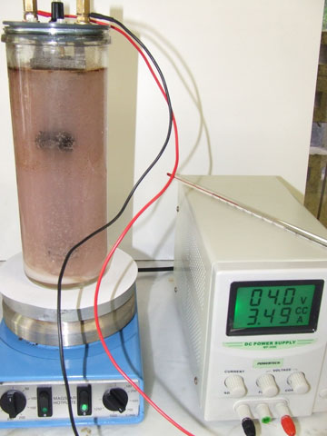

Below is a synopsis of corrospondence that occured on www.sciencemadness.org in TechnoChemistry section (2008).
|

|
Surface preparation and etching:
The Ti rod was run in a drill press, and sanded with 80 grit garnet paper for 1 min. and then 100 grit paper for 1 min.
The rod was then etched in hot concentrated (290 g/L) hydrochloric acid for about 10 mins. I do this by placing the rod in a test tube containing just enough (about 1/2 full) HCl that the level rises to the top of the tube. The tube is placed in an empty 400 ml beaker on a hot plate. Eventually H2 bubbles will be evolved from the shiny Ti surface and it will turn dark grey. The HCl will turn pale violet or mauve. The rod is then well rinsed with distilled water.
Co3O4 (spinel) interface coating:
A test tube was about 1/2 filled with an ~ 50% solution of Cobalt Nitrate Hexahydrate. This was made by dissolving 20g of moist crystals in 20 mls of water. This solution is dark red. The etched portion of the rod was dipped in the solution for 15 secs. and wiped against the inside of the tube as it was slowly withdrawn. The drop of liquid usually adhering to the end of the rod was absorbed on a piece of paper towel. The rod was hung in the previously described heat gun arrangement, and the heat turned up to 380C +/- 10C. The heat was maintained for 10 mins. (Use an egg timer or similar!). The heat setting was then turned to minimum and the hot air cooled down to about 50 - 60C. At this point the gun was turned off and the rod allowed to cool further for a few mins. The rod was then removed by its wire hanger (careful it's still very hot) and wiped lightly with a soft cotton cloth to remove any loose material or "crusty" build-up. Mark off one coat with a tick on a piece of paper (don't forget this, it's very easy to lose track). The rod is then cooled to room temperature by walking around waving it. In the case of Hubert (the anode) this dip 'n bake procedure was repeated 3 times more, for a total of 4 coats.
Beta-MnO2 over coating:
A test tube was about 1/2 filled with a 1.2 M solution of Mn(NO3)2 which had been stabilised with a few drops of nitric acid. The solution is a pale pink-rose colour. The rod was dipped in this solution and baked in exactly the same manner as outlined above. This coating procedure was repeated 10 times. After the last coat had "baked" for the allotted 10 mins. the rod was baked for an additional 30 mins. at 380C. After this the rod was slowly cooled down over a period of 30 mins. by slowly decreasing the heat gun setting.
To obtain the higher temperatures used for this anode, I placed tape over two of the air inlet slots on the heat gun.This slows down the air flow, and meant I could reliably achieve 400C.
This coating system is loosely based on US Patents; 4072586, 4265728, 4366042, and 4368110.
The image shows the anode with the simple wire jig used for hanging it in the heat gun tube
|

|
I put together a more or less practical cell specifically to accommodate Hubert (the Mn Oxide anode). It has a capacity of 800 mls and an annular SS cathode and was cobbled together from bits of previous cells. The internal connections for the SS cathode are covered in glue lined heatshrink and the SS screw electrical connection is coated in hot glue. Hopefully this will prevent headspace corrosion of the cathode which has been causing me a few problems lately.
The cell has been running for about 28 hours now at 2 amps and 3.6 volts (55 mA/cm^2). So far there is absolutely no black specks of MnO2 floating around, this has plagued earlier MnO2 anodes. The cell actually looks like a large jar of pink champagne. But it's not a tipple I would like to try. More like a cocktail from hell. I was surprised to see small, flakey crystals of KClO3 settling on the bottom only 12 hours after starting. I thought it would take longer, but I suppose KClO3 is near insoluble in near saturated KCl solution. Looking good now, but what it will be like in a couple of weeks time is anybody's guess!
|
|
 |
Hubert has been running in the 800 ml KClO3 cell for 3 days now.
The solution is a pale pink from MnO4- but has not increased in colour from beyond the first 12 hours. I think an equilibrium has been achieved with the MnO2 on the anode. This may be some sort of "common ion effect". The colour looks worse than what it is, due to the strong colouration ability of MnO4-, and is really a miniscule amout that can be cleared away with a few drops of H2O2.
Other than the pink colouration, the solution is crystal clear (literally). I have dropped in a magnetic stirrer bar to improve the efficiency and this brought about a "snow storm" of 5mm of KClO3 overnight. There is now about 10 mm of crystal "snow" accumulated on the bottom, and it's really blowing a blizzard in there. |
one power failure later

After Hubert's unfortunate accident resulting from the power failure, the electrode assembly and container were cleaned up, refilled with fresh, saturated KCl and reborn as "Purple Haze 2". Hubert appears little changed, I am starting to think that most if not all the black/brown mess in the cell came from the cathode. When I started up "Purple Haze 2" the electrical parameters were identical to those previously. I have now increased Hubert's current to 3.6 amps, this corresponds to a current density of 100mA/cm^2.
Interestingly "Purple Haze 2" is neither purple or hazy, but crystal clear. It seems weird seeing a chlorate cell so clear, it has iridescent, platelet-like crystals of KClO3 floating around like snowflakes, before settling on the 3 cm high pile on the bottom of the container.
It would appear that some of our earlier ideas on the origin of the purple MnO4- were wrong. I now think it was coming from unconverted Mn++ in the pyrolitic coating. It may be possible to remove the pink colouration, if deemed necessary, by a quick electrolytic leaching, pretreatment in a brine solution!
Another possibility, really too awful to seriously contemplate, is that all the MnO2 coating was stripped of Hubert during the "accident" and that he is now running on the 4 Co3O4 interface layers, much like my earlier "4 coat anode" from the "Cobalt Oxide Anode" thread. I think this is unlikely though as both coating schemes were put on under the same conditions, and the "4 coat anode" started to shed oxide very early on! There is no sign off this happening with Hubert at the moment.
Hubert has now been in a Chlorate cell for nearly 2 weeks and scarcely seems affected by his "ordeal". He has produced copious amounts of KClO3 (Na - free) which I am still extracting. He has been running most of this time at 50 mA/cm^2 and for the last few days at 100 mA/cm^2
After a few calculations, I have figured out Hubert has now been running for 422.5 hours (nearly 18 days) for a total of 912 Ah. After I increased the current to 3.6 Amps a slight pink colouration appeared in "Purple Haze 2". I have since dropped the current back to 3 Amps, mainly because the power supply was overheating. I have done 3 or 4 extractions of KClO3 crystals, (it is amazing how 3 - 4 cm of crystals in the cell ends up as 1 cm in the filter). The cell has been recharged with KCl and continues to operate well, it is still perfectly clear, there is another couple of cm of crystals accumulated. There is very little change in the electrical parameters since day one. Hubert should continue for a while yet, obviously MnO2 performs quite well in a Chlorate cell.
Hubert and "Purple Haze" are still running well and producing KClO3 for me. Hubert has been running continuously for about 26 days (617 hours, exactly) for a total of 1349 Ahrs. About a week ago, I dismantled Purple Haze, chilled it and extracted the KClO3. I replaced the small stirrer bar with a bigger one and this keeps all the KClO3 in suspension. This seems to result in denser sand-sized crystallites forming. These can be scooped out of the cell at about 3 - 4 day intervals, when the stirrer is switched off.
The colour/manganese dissolution is a bit problematical. I'm not at all sure what is going on. Purple Haze is actually colourless at the moment. When I did the chilling-extraction a week ago the cell was slightly pink, it turned brownish and precipitated MnO2.H2O for a couple of days, now it is clear. Needless to say it is losing Mn from the anode slowly, but the mechanism is anyone's guess. The period when Hubert was running at 3.6 amps (100 mA/cm^2) seemed to result in a loss of Mn and a marked deterioration in electrical parameters.
Hubert is now running at 4.0 volts / 2 amps versus 3.6 volts / 2 amps on the second day of operation. I think perhaps if I had kept the current density at say 50 mA/cm^2 and the anode had not suffered during the electricity shutdown, it may have been capable of running for several months. I guess now though, I'll let it run it for another week, then call it quits, I've collected about 600g of KClO3 so far.
Hubert is still running in the KClO3 cell, I will have to call it a day soon though, as I'm getting a bit sick of it. It's been running continuously for 42 days (1008 hours) now. Every few days I scoop out KClO3 and add some more KCl (a bit like running a ginger beer plant). The electrical characteristics are very, very slowly degrading. I think if you put on 20 coats of MnO2 and kept the current density to 50 mA/cm^2 it would just about run forever.
I have finally pulled the plug on Hubert and non-Purple Haze. They were still producing KClO3 but I have grown tired of this combination and besides I wanted the stirrer/hotplate for other things. The anode/cell has run for 1092 hours (45.5 days) and a total of 2299 Amp hours. I still have to redissolve all the separate lots of KClO3 obtained and recrystallise it.
As a final footnote on "Hubert" and "Purple Haze" I am very pleased with the amount of KClO3 produced. All I did was scoop out moist, fine crystals at regular intervals. At the end I gave all these a final drain and then redissolved them in a minimum amount of water, this was then cooled slowly over 24 hours and I got a good coarse crystalline product. No filtering was required, no additives were added! It's actually a great way to run a cell, especially if it was on a larger scale!
The final amount of oven dried KClO3 was 945g
2299 Ahours were used, so theoretical moles produced would be 2299/160.8 = 14.3 moles at 100%
Actual moles = 945/122.6 = 7.71
so efficiency = 7.71/14.3 = 53.9%
*************************
MnO2 anode in a Perchlorate cell
Meet Mathilda!

In a continuance of my Teutonic naming scheme, my latest anode is called Mathilda (brave little maid). Mathilda is destined for a Perchlorate cell like her predecessor Gertrude. I have put together a 400 ml cell for this purpose, which closely matches Mathilda's length. About 10 cm of her is in electrolyte for a surface area of about 30 cm^2. She will be run at 3 amps, which is 100 mA/cm^2, my new "benchmark" for anodes of this type. Running at any higher current density will only cause the 400 ml cell to overheat.
Mathilda was pretreated for several hours in a saline solution at 100 mA/cm^2 to leach out any unconverted Mn++ from the coating. This produced a purple colouration similar to Hubert's first cell.
Mathilda's coating scheme closely follows that of Hubert. Major changes were:
1) Even higher temperature, 400 oC +/- 10C. versus 380C.
2) More MnO2 coats, 15 versus 10
3) The 4th Co3O4 interface coat was alternated with the 1st MnO2 coat. I did this on a whim, I thought perhaps it would produce a more "diffuse" boundary layer, with less stress. Who knows!
4) The final "baking" time was extended to 1 hour. I did this to hopefully make the pyrolysis of the outer layers more complete.
In addition, I made a major blunder with the MnO2 coating solution. I forgot to 50:50 dilute my ~2.4 molar "stock solution" Manganese Nitrate. I couldn't understand why I was getting MnO2 rubbing off each coat, when this had not happened with Hubert. It was not until after I had finished that I realised my mistake! The last 5 coats were somewhat experimental:
Coats 11,12, 13 used "stock solution" diluted 50:50 with Isopropyl Alcohol, and various schemes of controlled heating, eg. 100/200/300/400C.
Coats 14 and 15 used the previous solution diluted further 50:50 with water.
Mathilda has been running at 3 amps in the Perchlorate cell for 15 hours. There has been a little brownish precipitate, the coating looks OK, although the electrolyte level line is visible. I have decided to filter the solution. and it is now perfectly clear. This will allow me to more easily monitor ongoing corrosion. The pH of the cell was measured after 3 hours and was 11.3, it was measured again after 15 hours and found to be 11.7.
Mathilda has completed 118 hours, for a total of 251.5 Ah. Most of this was in the one Perchlorate cell, but when the run finished I put her in a second cell, unfortunately the voltage has now risen to about 5.6 Volts and I am stopping this experiment. Mathilda has performed much better than Gertrude (mainly because of the higher temperature MnO2 baking). But the performance in a Perchlorate cell is by no means satisfactory. Mathilda has continued to produce brown/black hydrated MnO2 particles in the high pH (11.6) environment of a Perchlorate cell. I have done a single extraction of KClO4 from the 400 ml cell, it's not worth the trouble getting out more. Unless the addition of say Bi, improves the attrition rate, I don't see much future in MnO2 as a Perchlorate coating. I guess if Bi were to increase the Oxygen potential, there might be less attrition caused by the aggressive evolution of this gas.
Chemicals needed
(Xenoid)
Cobalt Nitrate can be made from Cobalt Carbonate (ceramics store) and Nitric acid.
I originally made Manganese Nitrate from Mn Sulphate (hydroponics store) and Ca Nitrate (hydroponics) store, using double dissolution, precipitating CaSO4. This precipitate is very hard to separate (that's where my pressure filter comes in handy). When I was coating the gouging rods I just did this using stoichiometric quantities, with out trying to purify the Mn nitrate, I now realise it was contaminated with CaSO4 (slightly soluble) and the reactants as well.
I have tried doing this again but I am being more carefull, doing it in a multi-stage process, it's taking too long and I still haven't got any Mn nitrate.
Since I obtained 500 mls of nitric acid (at great expense) a few weeks ago. I have now made some Mn Nitrate by reacting it with pottery grade Mn Carbonate and filtering. You need to leave the solution slightly acidic otherwise the Mn nitrate tends to decompose.
Sb and Bi are the same, I gather. I ended up with a solution that was about 200g/litre, I used this for the first coat on "Gertrude" but it looked to thick, so I diluted it by half to about 100g/litre for the subsequent coats.
Notes:
The Manganese Dioxide electrode will be damaged if left in a cell with the power not connected. The coating will strip off. If there is a power cut the anode will be damaged. It will be wise to put a diode in series with the supply to stop current from flowing the opposite way if cell goes off. Perhaps a standby battery will also serve the same purpose.
Further Anode experiments [MMX]
Whilst not wanting to return to the heady days of early '08, I've been spending the last few months experimenting with an MnO2 anode aimed at perchlorate production.
Rather than try to coat etched Ti directly or via the Co2O3 interface layers, I decided to thermally coat some MMO mesh as it is so readily available now.
I re-examined De Nora et. al's (Diamond Shamrock) 1978 US Patent Number 4072586 which among other things mentions applying thermally decomposed coats of beta-MnO2 over thin layers of RuO2:TiO2 on Ti (aka MMO). Beta-MnO2 is apparently isomorphous (rutile structure) with RuO2 (and TiO2) and thus bonds well to the MMO surface. In particular my attention was drawn to column 5 (lines 22 - 54), which mentions the suitability of beta MnO2 for perchlorate production, especially when enhanced with up to 5% As, Sb or Bi (actual element not specified).
Indeed the thermal beta-MnO2 does indeed bond well to the MMO coating and will form a thick, hard, crusty coating. It will even bond directly to non-etched oxide coated Ti, because of the rutile structure, but will of course be non-conducting.
Because of the size, instead of dipping the anode in the coating solutions, I used painting and eventually a spray technique. For mesh material, spraying is ideal as it is easy to coat all surfaces of a complex electrode assembly. A small (30 ml) plastic perfume sprayer proved ideal.
For thermal decomposition I used the same hot air gun technique as described earlier. Because of the larger electrode size I used a larger diameter tube and mounted it on a stand, otherwise the set-up was basically the same. The sprayed on coating was dried over the turned down hot air gun, this prevents drips and runs. The electrode was then baked for 10 mins at about 380 oC. Initially 25 coats of Bi-doped MnO2 were applied.
Crusty, black MnO2 thermal coating over MMO dual anode assembly.

Stock Solutions:
Mn(NO3)2 - made from pottery grade MnCO3 (31g) and 68% nitric acid (50 ml). This should fully react, may need a little more depending on purity of MnCO3. Solution was filtered and made up to 100 ml, it contains 48.25g Mn(NO3)2 or 14.8 g Mn.
Co(NO3)2 - crystals made by double dissolution of CoSO4 and Ca(NO3)2 or reacting CoCO3 with 68% nitric acid (see thread). 10 g of moist crystals (Co(NO3)2.6H2O) were dissolved in about 25 ml of water and made up to 50 ml in a volumetric flask. This solution contains .0405 g Co / ml
Dipping / Brushing / Spraying Solutions:
These are loosely based on Pat. #4072586, but are by no means definitive. They are just what I came up with for initial tests.
Pure MnO2: 16 ml of the Mn(NO3)2 stock was transferred to a 50 ml volumetric flask, along with 5 ml of isopropyl alcohol, and made up to 50 ml with water.
Bi doped MnO2: 16 ml of Mn(NO3)2 stock was transferred to a 50 ml volumetric flask, along with 1 ml of the Bi(NO3)3 solution (.051 g Bi) and 5 ml of isopropyl alcohol and made up to 50 ml with water. This solution is roughly 50g / litre Mn with 1.3% Bi in MnO2.
Co doped MnO2: 16 ml of Mn(NO3)2 stock was transferred to a 50 ml volumetric flask, along with 3 ml of the Co(NO3)2 solution (.121 g Co) and 5ml of isopropyl alcohol and made up to 50 ml with water. This solution is roughly 50g / litre Mn with 3.0% Co in MnO2.
--------------------------------------------------------------------------------
I'll be the first to admit I have been less than scientific in testing this anode. Hopefully, because it's so simple to make, others will have a go at evaluating it's performance as well. From the earlier work with MnO2 anodes, I knew they would make both chlorate and perchlorate, I really wanted to test their practicality in this new configuration.
Electrode assembly, note 3 titanium cathodes and 5mm spacing!

All testing has been carried out in a 1 litre cell.
1. The anode assembly along with 3 Ti cathodes (5 mm spacing) was placed in a 100 g/L KClO3 solution (saturated at 30oC.). The pH was reduced by the addition of 1 ml conc. HCl to about 2.8 this in an attempt to shift the Mn stability away from the wide end of the MnO4- field (high pH) and into the region of maximum stability for MnO2. The idea behind this was to try and avoid the "Purple Haze" effect which plagued earlier efforts with MnO2 anodes. Sadly this had no effect whatsoever, and the cell turned pink within 15 mins. The cell was run at a conservative 3.8 V / 3.5 A, this limited the temperature rise to 30oC. The cell was run for 48 hours (168 Ah), no perchlorate was detected during this time. A little, brown hydrated MnO2 was deposited on the cathodes and the cell bottom and sides.
First assembled 1 litre test cell, note permanganate "Purple Haze" and MnO2 scum!

Thinking that perhaps the cell voltage was a little low for perchlorate production (industry use 5 - 6 Volts) I dismantled the cell and removed the close spaced cathodes and replaced them with a single Ti mesh cathode spaced about 4 - 5 cm away. This had the immediate effect of raising the required voltage to 5.7 V at 3.5 A. After a further 17.5 hours (61.2 Ah) in this new configuration there was still no positive test for perchlorate!
Disheartened, I tried an NaClO3 cell
2. The 1 litre cell was filled with 500g / L NaClO3 solution. The single cathode with 4 -5 cm spacing was retained and the cell operated at 4.8 V / 3.5 A. Cell colour was pale pink and a test for perchlorate was negative after 3 hours. The next day after 23 hours (80.5 Ah) a positive test for perchlorate was obtained.
Heartened by this, I dismantled the cell and added another 10 coats of Bi-doped MnO2 to the anode assembly, although it still looked in good condition. The electrode was reassembled with the original 3 Ti cathodes with 5 mm spacing, and the cell was connected to a new power supply and now running at about 4.6 V / 7.8 A. The cell was run for a further 68 hours (530.4 Ah). Positive perchlorate tests were obtained directly from the warm liquor.
3. The cell was dismantled and refilled with the 100 g/L KClO3 solution from earlier. The anode assembly was coated with an additional 5 coats of Co-doped MnO2. A single Ti cathode with spacing of 5 to 10 mm was used. The cell was operated at about 5.8 V / 9.5 A for about 21 hours (199.5 Ah), no perchlorate was detected.
4. The cell was dismantled and the anode assembly had an addditional 5 coats of pure (un-doped) MnO2 added. The reassembled cell was operated at about 5.2 V / 7.6 A for 21 hours (160 Ah), no perchlorate was detected.
5. Added 5 coats of Bi doped MnO2 to anode assembly and placed in a 300g / litre NaCl cell in an attempt to progress all the way to perchlorate. The cell was operated at about 8 - 9 Amps. After about 6 days and 1188Ah the presence of perchlorate was indicated. This became stronger, and after about 12 days (2376Ah) the cell was shut down (pH=8.3). The anode still appeared to be in good condition (still plenty of coating).
6. Started a new 1 litre cell containing about 80g / L KClO3 solution, this was mainly to test if the pink colouration was generated with well-used (leached) MnO2 anodes. I used the anode assembly from the NaCl -> NaClO3 -> NaClO4 run. A pink colouration appeared in the cell within 15 minutes. I left the cell running at about 5.0V / 8.0A, after about 48 hours I got a positive test for perchlorate (384Ah).
7. I made 4 identical test strips of MMO coated with 5 coats of pure MnO2, 1.3%Bi/MnO2, 3.9%Bi/MnO2 and 3%Co/MnO2. I carried out some electrical measurements with these anodes in NaClO3 solution, but there was no obvious difference in their performance.
Summary: Poor man's lead dioxide!
Pros: Very cheap, readily available, non-toxic and easy to make. Easy and quick to apply to an existing MMO coating (5 coats in an hour). Coat seems to last quite well, and a few more can be added quickly before a run. Will make chlorate and perchlorate and will convert NaCl to NaClO4.
Cons: Contamination with pink MnO4- and brown MnO2. Not very efficient and require solutions to be highly concentrated. The low solubility of KClO3 means particularly low efficiency in this system
HIT THE BACK BUTTON ON YOUR BROWSER
BACK TO TOP